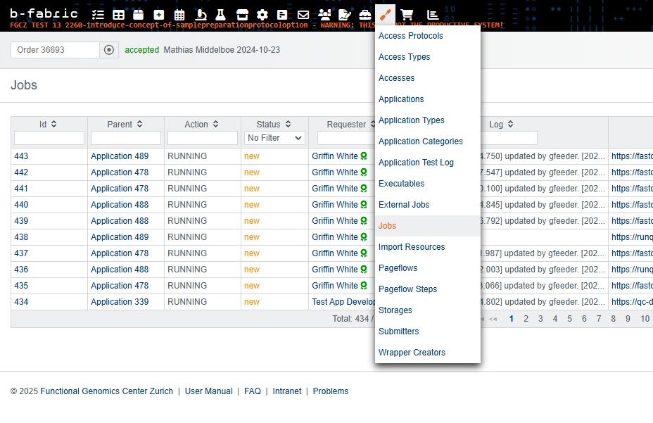
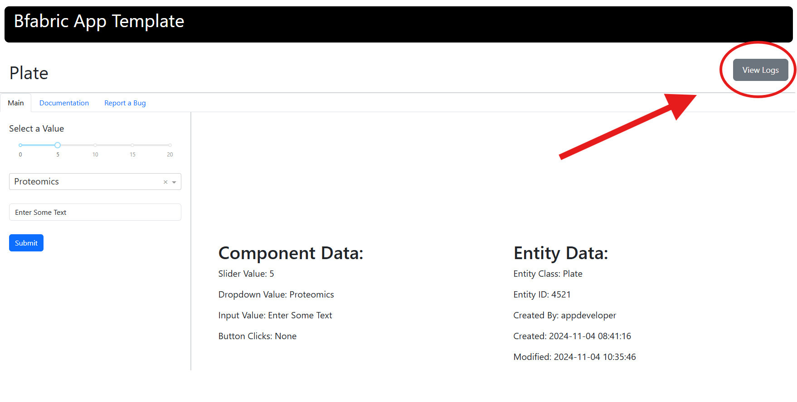

Important Functions#
This section provides an in-depth explanation of the core functions used in bfabric_web_apps. These functions are responsible for authentication, layout management, logging, API interactions, bug reporting and more.
1. Application Initialization#
create_app()#
The create_app() function initializes a Dash app instance with pre-configured settings suitable for use with B-Fabric, including responsive design and Bootstrap-based styling. This function simplifies starting a new Dash app by applying common configurations.
If you want to explore the implementation of the create_app() function in more detail, check out the source code on GitHub.
app = create_app()
Returns:#
A Dash app instance with support for dynamic callbacks and responsive design.
Return type:#
dash.Dash
Example Usage#
from bfabric_web_apps import create_app
# Create an instance of the Dash app using the create_app function.
app = create_app()
Understanding the app Object in Dash#
The app object is an instance of the Dash class from the dash library. It serves as the central object of a Dash application, managing the layout, callbacks, and overall app configuration. The Dash() class is used to create an instance of a Dash application. It initializes the app, providing the structure to define its layout and interactivity. The Dash() class serves as the foundation for building Dash applications, allowing developers to add components like HTML elements, interactive controls, and graphs.
For more details on defining layouts in Dash, refer to the Dash Layout Documentation.
2. UI and Layout Management#
get_static_layout()#
The get_static_layout() function combines various UI components into a structured Dash layout with pre-defined tabs for Main, Documentation, and Report a Bug. This layout ensures a consistent look and feel across B-Fabric applications, while allowing customization of the main content and documentation.
If you want to explore the implementation of the get_static_layout() function in more detail, check out the source code on GitHub.
app.layout = get_static_layout(app_title, main_content, documentation_content)
Args:#
base_title (str, optional): The title displayed in the browser tab. Defaults to
None.main_content (Dash HTML Component, optional): The main content displayed in the "Main" tab. Defaults to
None.documentation_content (Dash HTML Component, optional): The static documentation displayed under the "Documentation" tab. Defaults to
None.
Returns:#
A Dash layout containing the specified content along with static tabs for Main, Documentation, and Report a Bug.
Return type:#
dash.html.Div
Example Usage#
# Import the 'html' module from Dash
from dash import html
sidebar = html.Div([...]) # Custom sidebar content
content = html.Div([...]) # Main app content
documentation = html.Div([...]) # Documentation content
# Set the layout of the app
app.layout = get_static_layout("My App", sidebar, documentation)
For detailed guidance on implementing and structuring layouts, please refer to the official Dash documentation.
3. Authentication & Token Handling#
Overview#
The B-Fabric authentication flow is designed to be straightforward and seamless for users of the bfabric_web_apps library. For a deeper theoretical explanation of the authentication and token handling process, along with a detailed look at the function output, refer to the chapter Important Components. While the underlying logic is abstracted away from the user, the following section provides an overview of how authentication and token processing works in practice.
process_url_and_token()#
The process_url_and_token() function processes URL parameters to extract and validate authentication tokens, retrieve related entity data, and prepare page content for B-Fabric applications.
If you want to explore the implementation of the process_url_and_token() function in more detail, check out the source code on GitHub.
process_url_and_token(url_params)
Args:#
url_params (str):
The URL parameters containing the token (e.g.,"?token=abc123").
Processing Steps:#
Check for
url_params:If
url_paramsis empty orNone, the function immediately returnsNonefor the token, token data, entity data, app data, session details,Nonefor the job link, and a default" "for the page title.
Extract the token:
Splits the
url_paramsstring to find the segment aftertoken=.This extracted string is treated as the token.
Validate the token:
Calls
BfabricInterface.token_to_data(token)to validate the token.If the token is expired (
"EXPIRED"), returnsNonefor the token, token data, entity data, app_data, session details, job link, and a default" "for the page title.If the token is invalid or not found, the function also returns
Nonevalues for these fields and uses" "for the page title.
Retrieve entity data and app data:
On successful token validation, loads the token data (
tdata) from JSON.Calls
BfabricInterface.entity_data(tdata)to fetch entity details and parses it intoentity_data.Calls
BfabricInterface.app_data(tdata)to fetch app-related information and parses it intoapp_data.
Generate page title:
Constructs a string based on the entity class, entity name, and environment.
Falls back to
"Bfabric App Interface"if key fields are missing.
Construct job link:
Extracts the
jobIdfrom the token data (tdata).Checks the environment (test or production) and constructs the corresponding B-Fabric job URL with
jobId.If no
jobIdis present,job_linkdefaults toNone.
Compose session details:
Builds a list of Dash HTML components containing summary information about the entity, token details, and app metadata.
Includes environment, job ID, user name, session expiration time, and the current timestamp.
Returns:#
The function returns a 7-element tuple, which varies depending on whether authentication succeeds or fails.
Authenticated Case:
Returns:
token (str): The extracted token string.
token_data (dict): A dictionary containing valid user and environment data.
entity_data (dict): Details about the current entity (e.g., name, class).
app_data (dict): Information about the related application (e.g., name, description).
page_title (str): A dynamically generated string based on token and entity data.
session_details (list): A list of Dash HTML components summarizing the session.
job_link (str): Dynamically generated link to the job page (if
jobIdis provided).
Return Type:
(str, dict, dict, dict, str, list, str)
Authentication Fails:
Returns:
token:
Nonetoken_data:
Noneentity_data:
Noneapp_data:
Nonepage_title (str): Defaults to
" ".session_details:
Nonejob_link:
None
Return Type:
(None, None, None, None, str, None, None)
Example Usage - Callback Integration#
This function is typically used within a Dash callback to manage authentication. As a reference, you can check out how this function is used in generic_bfabric.py.
@app.callback(
[
Output('token', 'data'), # Store authentication token.
Output('token_data', 'data'), # Store token metadata.
Output('entity', 'data'), # Store entity data.
Output('app_data', 'data'), # Store app data.
Output('page-title', 'children'), # Update page title.
Output('session-details', 'children'), # Update session details.
Output('dynamic-link', 'href') # Directly update the button!
],
[Input('url', 'search')] # Extract token from URL parameters.
)
def generic_process_url_and_token(url_params):
return process_url_and_token(url_params)
4. Logging#
Overview#
Logging in B-Fabric is crucial for tracking user actions, API calls, and errors. Logs are stored in B-Fabric's job history, ensuring transparency, accountability, and effective debugging.
Accessing Logs in B-Fabric#
Open the Job menu item (see screenshot).
Use filters or search by Job ID to find the relevant job.
Click on the Job ID to open the job details.
In the job details view, click on the Log entry to access all recorded logs for that job.

If the web application is based on the provided templates, there is an additional way to find the logs.
Through Web Applications#
If the web applications are built using the provided templates, a shortcut to logs is available:
In the application, locate the button in the top-right corner (see screenshot).
Clicking this button will directly open the corresponding logs for the job.

Initializing a Logger Instance#
A logger instance is essential for tracking user actions, API calls, and errors within B-Fabric. This process ensures accountability and simplifies debugging by maintaining detailed logs of system events.
get_logger()#
The get_logger() function extracts logging-related information from token_data and initializes a Logger instance for managing and storing logs in B-Fabric.
If you want to explore the implementation of the get_logger() function in more detail, check out the source code on GitHub.
L = get_logger(token_data)
Args:#
token_data (dict): A dictionary containing token information. This is required to associate logs with the corresponding user or session in B-Fabric.
Returns:#
A logger instance for managing and creating logs.
Return Type::#
bfabric_web_apps.Logger.Logger
Example#
# Check if token data is available
if token_data:
# Initialize the logger instance
L = get_logger(token_data)
# Use logger instance to log a simple user action
L.log_operation("User Login", "User logged in successfully.")
Creating Logs: Manual and Automatic Methods#
Logging in B-Fabric enables tracking of system events through two key methods: manual logging with log_operation() and automatic logging with logthis().
Use
log_operation()when you need to manually record specific user actions or system events, such as data submissions or logins.Use
logthis()when making API calls to automatically log execution details, including function names, input parameters, execution time, and results. This simplifies API monitoring by capturing all relevant context without additional manual logging.
log_operation()#
The log_operation() function allows manual logging of user actions, storing these logs in B-Fabric's job history. It is commonly used for tracking specific events, such as data submissions or user logins.
If you want to explore the implementation of the log_operation() function in more detail, check out the source code on GitHub.
L.log_operation(operation, message, params, flush_logs)
Args:#
operation (str): A short event label describing the action (e.g.,
"Login","Update Sample").message (str): A detailed description of the event.
params (dict, optional): Additional metadata related to the event. Defaults to
{}.flush_logs (bool): Controls whether logs are immediately sent to the backend. Defaults to
True.If
True: The log entry is appended to the local log storage and immediately flushed to the backend using theflush_logs()method. This ensures that the log is recorded in real time.If
False: The log entry is stored locally and will remain in the local cache until the next time theflush_logs()method is explicitly called. This can be useful for batching multiple log entries to minimize backend calls.
Returns:#
None
Example#
# Check if token data is available
if token_data:
# Initialize the logger instance
L = get_logger(token_data)
# Log a file upload action
L.log_operation(
operation ="FileUpload",
message = "User uploaded a CSV file",
params = {"filename": "data.csv"},
flush_logs = False #The log entry is stored locally
)
logthis()#
The logthis() function automatically wraps an API call, logging essential details such as the function name, input parameters, execution time, and return values. This method simplifies logging for API interactions while capturing all necessary context.
If you want to explore the implementation of the logthis() function in more detail, check out the source code on GitHub.
result = L.logthis(api_call, args, obj, flush_logs, kwargs)
Args:#
api_call (function): The API function to execute. Example API calls could be
readorsave, depending on whether data needs to be retrieved or stored.endpoint (str): The endpoint to read from, e.g. "sample".
obj (dict) A dictionary containing the query, for every field multiple possible values can be provided, the final query requires the condition for each field to be met
flush_logs (bool): Controls whether logs are immediately sent to the backend. Defaults to
True.If
True: The log entry is appended to the local log storage and immediately flushed to the backend using theflush_logs()method. This ensures that the log is recorded in real time.If
False: The log entry is stored locally and will remain in the local cache until the next time theflush_logs()method is explicitly called. This can be useful for batching multiple log entries to minimize backend calls.
kwargs: These are keyword arguments passed directly to the API call. For example,
max_resultscan be used to specify a cap on the number of results to query. This example applies specifically to areadAPI call. If provided as an integer, the number of results will be limited to the specified value. If set toNone, the code will load all available pages. The function will continue fetching data page by page until either the maximum number of results is reached or all pages have been retrieved.
Returns:#
The result of the API call.
Return Type:#
any
Example#
lane_samples = L.logthis(
api_call = wapper.read,
endpoint="rununitlane",
obj={"id": [str(elt["id"]) for elt in lane_data.get("rununitlane", [])]},
flush_logs = False #The log entry is stored locally
max_results=None, #Keyword arguments to pass to the API call (kwargs)
)
flush_logs()#
The flush_logs() function is used to send all accumulated log entries to the backend at once and clear the local cache. This function is particularly useful when multiple logging operations have been performed with flush_logs=False, allowing logs to be batched and sent in a single request instead of logging each action individually. If no logs are stored, calling this function has no effect.
If you want to explore the implementation of the flush_logs() function in more detail, check out the source code on GitHub.
L.flush_logs()
Args:#
None
Returns:#
None
Behavior:#
If there are pending logs saved locally, they are flushed with a single API call to the backend, reducing the number of individual requests.
After a successful flush, the local log storage is cleared.
If no logs are pending, the function does nothing and exits immediately.
Example#
# Initialize the logger instance
L = get_logger(token_data)
# Log multiple API calls without flushing immediately
entity_data_list = L.logthis(
api_call=wrapper.read,
endpoint=endpoint,
obj={"id": entity_id},
max_results=None,
flush_logs=False # Store log locally
)
lane_samples = L.logthis(
api_call=wrapper.read,
endpoint="rununitlane",
obj={"id": [str(elt["id"]) for elt in lane_data.get("rununitlane", [])]},
max_results=None,
flush_logs=False # Store log locally
)
# Flush all stored logs at once
L.flush_logs()
5. B-Fabric Wrapper#
This chapter provides detailed documentation on obtaining and using the B-Fabric Wrapper, a crucial component in the B-Fabric application environment, designed for seamless interactions with the B-Fabric API.
Overview#
The B-Fabric Wrapper is an authenticated object providing a convenient and secure way to perform API calls to B-Fabric, such as reading data or saving resources. It encapsulates authentication credentials and configurations needed to interact with the B-Fabric system.
The wrapper must be initialized by validating an authentication token before it can be retrieved and used for subsequent operations.
Wrapper Initialization#
The wrapper initialization is handled internally by the system upon successful token validation. Users do not need to manually initialize the wrapper but must ensure that the authentication token has been validated first.
Retrieving the B-Fabric Wrapper#
get_wrapper()#
The get_wrapper() method returns the initialized B-Fabric wrapper. This method ensures that the wrapper is correctly configured and ready to use after token validation.
If the wrapper has not been initialized (due to the absence of prior token validation), the method will raise an error.
If you want to explore the implementation of the get_wrapper() function in more detail, check out the source code on GitHub.
Method Definition#
def get_wrapper(self):
if self._wrapper is None:
raise RuntimeError("Bfabric wrapper is not initialized. Token validation must run first.")
return self._wrapper
Exception Handling#
RuntimeError: If the wrapper is requested before token validation, indicating that the wrapper has not yet been initialized.
Usage Example#
Here's how you can easily obtain and utilize the B-Fabric wrapper:
Importing the B-Fabric Interface#
from bfabric_web_apps.objects.BfabricInterface import bfabric_interface
Getting the Wrapper#
# Retrieve the B-Fabric wrapper after successful token validation
wrapper = bfabric_interface.get_wrapper()
Important Considerations#
The wrapper object is essential for interacting with the B-Fabric API, and operations such as data queries (
read) and submissions (save) rely on this wrapper.Always ensure the wrapper is initialized by validating the authentication token beforehand. The token validation process happens automatically when using the provided B-Fabric workflow
process_url_and_token.
Example:#
from bfabric_web_apps.utils.callbacks import process_url_and_token
from bfabric_web_apps.objects.BfabricInterface import bfabric_interface
# Validate token first (internally initializes wrapper)
token, token_data, _, _, _, _, _ = process_url_and_token(url_params)
# Get the wrapper object
wrapper = bfabric_interface.get_wrapper()
# Example API call using the wrapper
results = wrapper.read("sample", {"id": "1234"})
Practical Usage Tips#
Always handle potential exceptions by using try-except blocks when retrieving the wrapper, especially in scenarios where token validation status may be uncertain.
6. B-Fabric Power User Access#
Power User Overview#
Username: gfeeder
Purpose: The power user account is used to perform elevated operations in the B-Fabric system, such as reading or modifying restricted data. Ensure that this access is used responsibly and within the bounds of the system's usage policies.
get_power_user_wrapper()#
Initializes and returns an authenticated wrapper for interacting with the B-Fabric API. This wrapper is specifically configured for Power User access, allowing privileged operations within the system. The default Power User login is gfeeder.
This function uses the environment information provided in token_data to determine the appropriate configuration for initializing the Bfabric instance. It reads the configuration from a predefined path (CONFIG_FILE_PATH) and applies the environment settings.
If you want to explore the implementation of the get_power_user_wrapper() function in more detail, check out the source code on GitHub.
power_user_wrapper = get_power_user_wrapper(token_data)
Args:#
token_data (dict): A dictionary containing token-related information.
The
"environment"key specifies the environment configuration (e.g., production or testing).If the
"environment"key is not provided, it defaults to"None".
Returns:#
A
Bfabricinstance, authenticated and configured for the specified environment.
Return Type:#
bfabric_web_apps.bfabric_web_apps.Bfabric
Example Usage#
# Initialize the power user wrapper
power_user_wrapper = get_power_user_wrapper(token_data)
7. Bug Reports#
Overview#
The bug-report functionality within the bfabric-web-apps Python library utilizes the Unix command-line utility mail to send emails from a running application.
When the send_bug_report function is invoked, token details, session details, and entity details are sent as input parameters from the browser cache. These details are aggregated into a mail_string, which is then sent to the bug-report email address via a system call to the Unix command-line utility mail.
“Mail” must therefore be active and running on the deployed system, and accessible to the application process for the bug-report functionality to work.
The default choice of bug-report mail address is "gwtools@fgcz.system" which is an OTRS queue, which is only accessible from within FGCZ server hardware. This is adaptable for your own use-case.
Modifying the Bug-Report Email Address#
By default, bug reports are sent to gwtools@fgcz.system, but you can customize this to fit your organization's needs. The bug-report email address can be modified as follows:
bfabric_web_apps.BUG_REPORT_EMAIL_ADDRESS = "my_email@my_domain.com"
This change ensures that bug reports are redirected to your preferred email address instead of the default FGCZ system queue.
For further details on modifying global variables, refer to Chapter 7: Dynamic Variable Configuration.
submit_bug_report()#
Submits bug reports by collecting the user-provided bug description, along with token and entity data, and then emails these details to the bug-report email address configured in bfabric_web_apps.BUG_REPORT_EMAIL_ADDRESS. By default, this address is gwtools@fgcz.system, but it can be customized as needed.
If you want to explore the implementation of the submit_bug_report() function in more detail, check out the source code on GitHub.
submit_bug_report(n_clicks, bug_description, token, entity_data)
Args:#
n_clicks (int): Number of times the submit button has been clicked.
bug_description (str): Description of the bug provided by the user.
token (str): Authentication token.
entity_data (dict): Data related to the current entity.
Returns:#
tuple: Two boolean values indicating whether the submission succeeded or failed.
is_open_success (bool): True if bug report submission was successful.
is_open_failure (bool): True if bug report submission failed.
Example#
As a reference, you can check out how this function is used in generic_bfabric.py.
@app.callback(
[
Output("alert-fade-bug-success", "is_open"), # Show success alert.
Output("alert-fade-bug-fail", "is_open") # Show failure alert.
],
[Input("submit-bug-report", "n_clicks")], # Detect button clicks.
[
State("bug-description", "value"), # Bug description input.
State("token", "data"), # Authentication token.
State("entity", "data") # Entity metadata.
],
prevent_initial_call=True
)
def generic_handle_bug_report(n_clicks, bug_description, token, entity_data):
return submit_bug_report(n_clicks, bug_description, token, entity_data)
8. Remote Creation of Web Applications#
Overview#
The create_web_app() function allows users to remotely create a new web application by providing necessary inputs such as name, URL, description, and technology type. This function eliminates the need to manually open B-Fabric, enabling application creation directly from the terminal.
create_web_app()#
The create_web_app() function prompts the user for input parameters required for creating a web application, validates these inputs, and then submits them to B-Fabric's API.
If you want to explore the implementation of the create_web_app() function in more detail, check out the source code on GitHub.
create_web_app()
Input Parameters:#
These are the variables used to create the web application. Some require user input, while others have default values.
Parameter |
Input/Default |
Description |
|---|---|---|
system |
User Input |
The system where the web app will be created ( |
technologyid |
User Input |
The ID corresponding to the chosen application type. Must be selected from available options. |
name |
User Input |
The name of the web application. |
weburl |
User Input |
The URL of the web application. |
description |
User Input |
A brief description of the web application. |
type |
Default ( |
Defines the application type. Always set to |
supervisorid |
Default ( |
The ID of the supervisor managing the application. |
enabled |
Default ( |
Specifies whether the application is active. |
valid |
Default ( |
Indicates whether the application is valid. |
hidden |
Default ( |
Determines whether the application is hidden. |
Example Usage#
from bfabric_web_apps import create_web_app
# Run the function to create a new web application
create_web_app()
Steps to Fill Out the Inputs:#
Select the System:
Type
TESTfor the test system orPRODfor the production system.If an invalid input is entered, the function will prompt again.
Choose the Application Type:
Available technologies for TEST:
1: Genomics / Transcriptomics
2: Proteomics
4: Metabolomics / Biophysics
6: General
10: New Tech
Available technologies for PRODUCTION:
1: Genomics / Transcriptomics
2: Proteomics
4: Metabolomics / Biophysics
6: General
10: Bioinformatics
Select the number corresponding to your application type.
Provide Additional Information:
Enter the Application Name.
Provide the Web URL where the application is hosted.
Enter a short description of the web application.
Once all inputs are provided, the function submits the data to B-Fabric and confirms successful creation.
Here's a cleaned-up and professional documentation chapter based on your draft. It preserves your structure while improving grammar, clarity, and formatting. I've expanded the explanations and polished the style for easier understanding.
9. Main Job Execution#
Overview#
The run_main_job function is a general-purpose wrapper for executing arbitrary Bash commands in a pipeline workflow. It provides a standardized method for orchestrating common execution tasks:
Saving files (remotely)
Bash command execution
Workunit creation in B-Fabric
Resource registration in B-Fabric
Attaching result files as links in B-Fabric
Automatic service charging in B-Fabric
This function also includes comprehensive logging to facilitate debugging, transparency, and traceability throughout the workflow.
run_main_job()#
run_main_job(
files_as_byte_strings: dict,
bash_commands: list[str],
resource_paths: dict,
attachment_paths: dict,
token: str,
service_id: int = 0,
charge: list[int] = [],
)
If you want to explore the implementation of the run_main_job() function in more detail, check out the source code on GitHub.
Arguments#
files_as_byte_strings (dict)#
A dictionary mapping destination file paths (on the external computation server) to their byte-encoded contents. This is used for transferring files to a remote server when the job is enqueued via Redis. If the function is executed locally, this can be left empty.
Important
All files must be provided as byte strings!
Example:
files_as_byte_strings = {
"./samplesheet.csv": read_file_as_bytes("./samplesheet.csv"),
"./NFC_RNA.config": read_file_as_bytes("./NFC_RNA.config")
}
In this example, the sample sheet and config file are read as byte strings and prepared for transfer to the external server.
bash_commands (list[str])#
A list of Bash commands that will be executed sequentially on the computation server. Standard output and errors from each command are captured and logged.
Example:
bash_commands = [
"rm -Rf /STORAGE/temp_rnaseq_run/work",
"mkdir /STORAGE/OUTPUT_rnaseq_2025-05-08_12-00-00",
"/home/nfc/.local/bin/nextflow run nf-core/rnaseq --input /STORAGE/temp_rnaseq_run/samplesheet.csv ..."
]
These commands clean up the previous working directory, create a new output folder, and execute the pipeline.
resource_paths (dict)#
A mapping of output files or folders (generated by the pipeline) to B-Fabric container IDs. All listed resources will be registered in B-Fabric under the corresponding container.
If a folder path is provided, all files in that folder and its subdirectories will be recursively registered as individual B-Fabric resources.
Example:
resource_paths = {
"/STORAGE/OUTPUT_rnaseq_2025-05-08_12-00-00": 37767
}
This registers all output files from the specified directory under container ID 37767.
attachment_paths (dict)#
A dictionary mapping output file paths to human-readable filenames. These files will be attached as download links in the B-Fabric web interface, typically for QC reports, logs, or summaries.
Example:
attachment_paths = {
"/STORAGE/OUTPUT_rnaseq_2025-05-08_12-00-00/multiqc/star_salmon/multiqc_report.html": "multiqc_report.html",
"/STORAGE/OUTPUT_rnaseq_2025-05-08_12-00-00/star_salmon/deseq2_qc/deseq2.plots.pdf": "deseq2.plots.pdf"
}
These attachments allow end users to quickly view or download important result files via B-Fabric.
token (str)#
The B-Fabric authentication token (a raw URL token). This token is required for interacting with the B-Fabric API, such as creating workunits, registering files, and adding download links.
Example:
token = url_params # Passed from the frontend or callback context
service_id (int, optional)#
The ID of the B-Fabric service to which the job execution should be billed. If no billing is required, use the default value of 0.
Example:
service_id = bfabric_web_apps.SERVICE_ID # e.g., 59 for RNA-seq
charge (list[int], optional)#
A list of container IDs to be billed for executing the job. This allows the system to attribute computational costs to specific project containers.
If you are using the integrated charge switch from the bfabric_web_apps components, the charge list should be derived from the switch state.
For more details, see the chapter Important Components.
To convert the boolean switch to a valid list of container IDs, use the following pattern:
# Update charge_run based on its value
if charge_run and project_id:
charge_run = [project_id]
else:
charge_run = []
Example:
charge = [37767] # Charge container ID 37767
If no charging is required, this can be an empty list ([]).
Function Steps & Behavior#
Step 1: Saving Files#
If the function is executed on an external computation server (via Redis), the files provided as byte strings are saved to their specified destination paths as normal files.
Each file write operation is logged, and any errors during the write process are recorded.
Step 2: Bash Command Execution#
Executes each Bash command using
subprocess(or similar).Output and errors from each command are logged in detail for traceability.
Commands are executed in the order provided.
Step 3: Workunit Creation#
For each container ID in the
resource_paths, a new workunit is created in B-Fabric.Workunit IDs are logged for future tracking.
If a workunit creation fails, an error is logged.
Step 4: Resource Registration#
Files or directories specified in
resource_pathsare registered in B-Fabric as output resources.The system associates each output with the corresponding workunit.
Success and failure of each resource registration is logged.
Step 5: Attachment as Links#
Files specified in
attachment_pathsare copied to shared storage (e.g., FGCZ shared space).These files are then linked in B-Fabric under the given filenames.
Each attachment link creation is logged.
Step 6: Automatic Charging#
If a
service_idandchargelist are provided, the corresponding containers are charged automatically for the service.If no
service_idis provided, this step is skipped.Charging operations are logged.
Return Value#
None
All activities are logged for debugging and traceability.
Example Usage#
1 Local Execution#
For smaller jobs or when running the job directly on the same server:
run_main_job(
files_as_byte_strings={},
bash_commands=[bash_command],
resource_paths={},
attachment_paths={},
token=url,
service_id=bfabric_web_apps.SERVICE_ID,
charge=charge_run
)
No file transfer is required; paths are assumed to exist locally.
Suitable for quick, lightweight operations.
2 Remote Execution via Redis Queue#
For larger workflows, offload job execution to a computational server using Redis:
from bfabric_web_apps.utils.redis_queue import q
q(queue).enqueue(run_main_job, kwargs={
"files_as_byte_strings": files_as_byte_strings,
"bash_commands": bash_commands,
"resource_paths": resource_paths,
"attachment_paths": attachment_paths,
"token": url_params,
"service_id": bfabric_web_apps.SERVICE_ID,
"charge": charge_run
})
All necessary files are serialized as byte strings and sent over the queue.
Job runs asynchronously on a remote worker.
Ideal for heavy computational pipelines (e.g., RNA-seq, Demultiplex etc.).
The q() Function#
The q() utility is a simple wrapper around the RQ (Redis Queue) library. It creates and returns a configured Queue object connected to the Redis backend:
def q(queue_name):
return Queue(name=queue_name, connection=conn, default_timeout=10000000)
Explanation:#
queue_name: The name of the queue to which the job should be submitted (e.g.,"light"or"heavy").connection=conn: Uses the preconfigured Redis connection fromredis_connection.py.default_timeout=10000000: Sets a high timeout value to support long-running jobs without early termination.
This abstraction simplifies job submission and ensures consistent queue behavior across the B-Fabric app ecosystem.